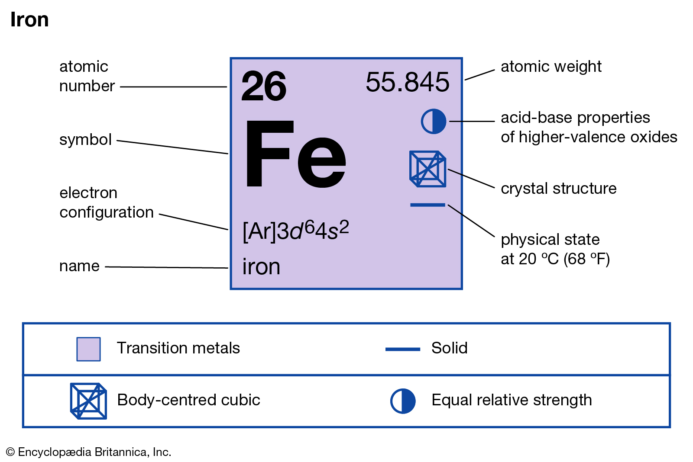

Mining in Australia
By Daniel Pavela
About Iron
The image shows the chemical structure of Iron. It’s atomic weight is 55.845 and it’s electron configuration is [Ar]3d64s2.(The Editors of Encyclopaedia Britannica, last updated October 2019)
Minerals are present in the natural environment, they can be found on both the surface and underground. Ores are a form of rock, they contain minerals with metal elements (Dunee, last updated April 2012). The difference is that minerals are made up of chemicals whereas ores contain 2 or more minerals. Minerals are usually extracted by having the iron ore being first blasted and dug up from open pit mines. The ores are then transported to crushing and screening plants. (Geoscience Australia, last updated not stated)
Iron life cycle

(Jimdo, last updated not stated)
Uses of Iron
Iron is used frequently in cooking tools such as ovens and microwaves. They are also used in buildings, bridges, skyscrapers and many others. A lot of vehicles use iron including automobiles, aircrafts, ships, heavy carriers, and heavy machinery. (Uses Of, last updated not stated)
Iron interesting facts
- Iron has a high resistance to rust formation (ScienceDirect, last updated March 2014)
- Iron is the 6th most common element in the universe
- Iron is the fourth most abundant element in the Earth's crust by weight
- Iron is found in both the inner and outer core of Earth
- Iron production for tools began as early as 3600 BC